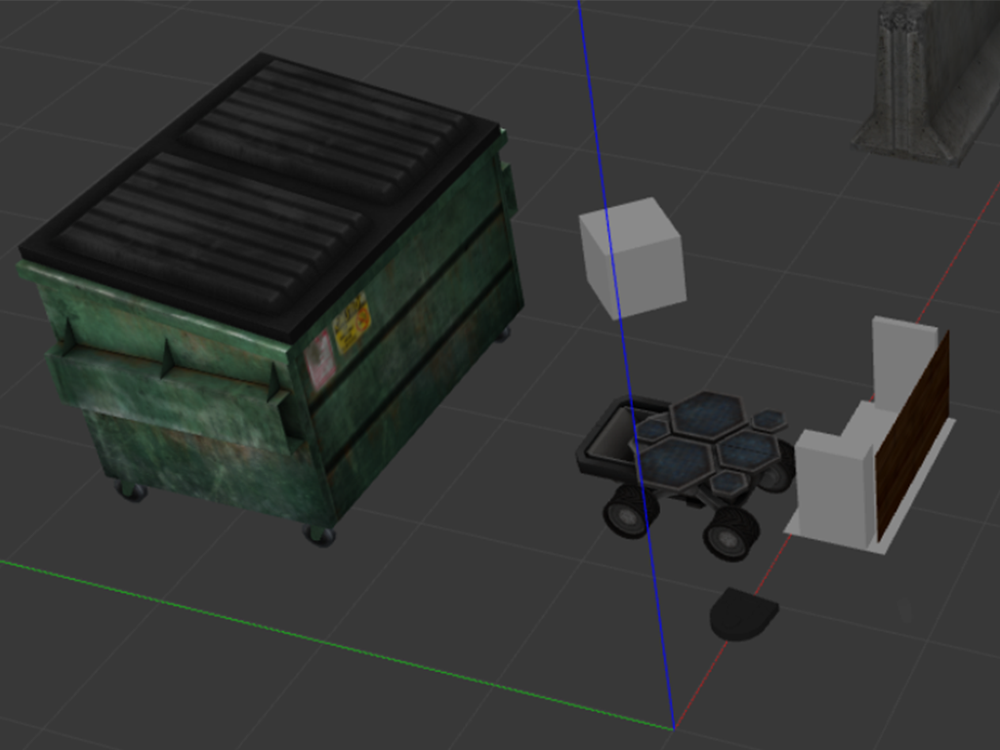

ROS2 RoboBehaviors + Finite State Machine
2024, Computational Robotics Project

A warm‑up project for Computational Robotics integrating several robot behaviors—teleoperation, square path driving, wall following, person tracking, and obstacle avoidance—under a centralized finite state machine (FSM). The FSM acts as the sole arbitrator of velocity commands, ensuring clean handoffs between behaviors and avoiding command conflicts.
I implemented the wall follower and the FSM integration. The FSM coordinates nodes via topics: each behavior publishes
its trigger and its own candidate velocity command; the FSM switches active state on triggers and forwards only the
active behavior's command to /cmd_vel. This architecture makes transitions observable and prevents
multiple nodes from driving the robot simultaneously.
Behaviors
- Teleoperation: Keyboard control for linear and angular velocity (WASD style) for testing and manual override.
- Square Path: Proportional control to drive straight segments and perform 90° turns on odometry.
- Wall Following: Maintain offset from a detected wall using LIDAR and heading error feedback.
- Person Tracking: Track the centroid of front‑arc LIDAR points, transform to odom frame, and follow within a safety radius.
- Obstacle Avoidance: Attractive/repulsive potential fields with capped linear speed and heading correction.
State Machine
States include obstacle avoidance, wall following, teleop, and emergency stop. Transitions are driven by dedicated
trigger topics (e.g., wall detected) and safety conditions. Only the active state's velocity is republished to
/cmd_vel.
Media


Report
Download Report
Source
Code and full write‑up are available on GitHub: flipper-slipper/comprobo-project1-robobehaviors-FSM.